STRUCTURAL CONSTRAINTS
In the analysis so far, we have assumed that structures were totally free to deflect. To prevent their free movement in space they must be supported in some way.
These supports prevent the structure from deforming or warping about any axis at the supports, thus generating extra loads. Also because of the thin nature of aircraft structural components, when bending occurs, the shear strains in the skin are significantly large to modify the loads carried by the booms.
This causes significant warpage through the beam section, so our assumption that plane sections remain plane after bending is no longer valid.
This type of analysis is extremely complex, which is why Finite Element Analysis is generally used to solve these types of problems.
However there are a number of simple problems that we can work through that will illustrate this analysis.
SHEAR STRESS DISTRIBUTION AT THE BUILT-IN END OF A CLOSED BEAM SECTION
|
This analysis is relatively easy as the solution is statically determinate. Look at an arbitrary beam built-in at a wall with two shear loads S, and S,. Still assuming that the cross section remains undistorted by the applied loads. The equation for shear flow as a function of shear strain is: but from the equation for γ we have that: $$ γ = {∂w}/{∂s} + {∂v_t}/{∂z} $$and the equation for rate of tangential displacement w.r.t z location is $$ {∂v_t}/{∂z} = p {dθ}/{dz} + {du}/{dz} cos(ψ) + {dv}/{dz} sin(ψ) $$ |
| ||
where :
vt : Tangential displacement of beamψ : Angle between tangent to surface of beam cross-section and positive x-axis
p : Normal distance between origin and tangent to beam surface. Positive if
movement of positive direction of tangent creates a positive rotation of 'p' about
axis origin.
Combining these three equations gives:
$$ q = τt = Gt( {∂w}/{∂s} + p {dθ}/{dz} + {du}/{dz} cos(ψ) + {dv}/{dz} sin(ψ) ) $$But, since the beam is built-in at the wall, its warping and rate of change of warping must be zero, ie: ${∂w}/{∂z} = 0 $,
$$ q = τt = Gt( p {dθ}/{dz} + {du}/{dz} cos(ψ) + {dv}/{dz} sin(ψ) ) $$which has 3 unknowns, ${dθ}/{dz}$ , ${du}/{dz}$ and ${dv}/{dz}$ .
To solve for these 3 unknowns we need to use equilibrium
Equating the shear flow about the x-axis gives:
$$ Σ F_x \text" --> " S_x = ∮ q cos(ψ).ds $$Equating the shear flow about the y-axis gives:
$$ Σ F_y \text" --> " S_y = ∮ q sin(ψ).ds $$Equating the moments generated by the shear flow about the z-axis gives:
$$ Σ M_z \text" --> " S_yx_R - S_x y_R = ∮ qp.ds $$Substituting the initial definition into the above three equations and assuming the shear modulus to be constant over the beam's cross section gives:
$$ {dθ}/{dz}∮ptcos(ψ).ds + {du}/{dz} ∮ t cos^2(ψ) + {dv}/{dz} ∮ t cos(ψ)sin(ψ).ds = S_x/G $$$$ {dθ}/{dz}∮ptsin(ψ).ds + {du}/{dz} ∮ t cos(ψ)sin(φ) + {dv}/{dz} ∮ t sin^2(ψ).ds = S_y/G $$
$$ {dθ}/{dz}∮p^2t.ds + {du}/{dz} ∮ tp cos(ψ) + {dv}/{dz} ∮ tp sin(ψ).ds = {S_yx_R - S_xy_R}/G $$
By making the following substitutions:
$$ θ' = {dθ}/{dz} \text " , " u' = {du}/{dz} \text " , " v' = {dv}/{dz} $$and arranging the three equations in matrix form :
$$ [ \table ∮ptcos(ψ).ds, ∮tcos^2(ψ).ds, ∮tcos(ψ)sin(ψ).ds; ∮ptsin(ψ).ds, ∮tcos(ψ)sin(ψ).ds, ∮tsin^2(ψ).ds; ∮p^2.ds, ∮tpcos(ψ).ds, ∮tpsin(ψ).ds ]. ( \table θ' ; u' ; v' ) = ( \table S_x/G ; S_y/G ; {S_yx_R - S_xy_R}/G ) $$Solving this matrix for θ', u' and v’, we can then substitute these values into previous equations to determine the shear flow distribution at the built in end on the beam.
EXAMPLE :
Calculate the shear stress distribution at the built-in end of the following single cell wing.
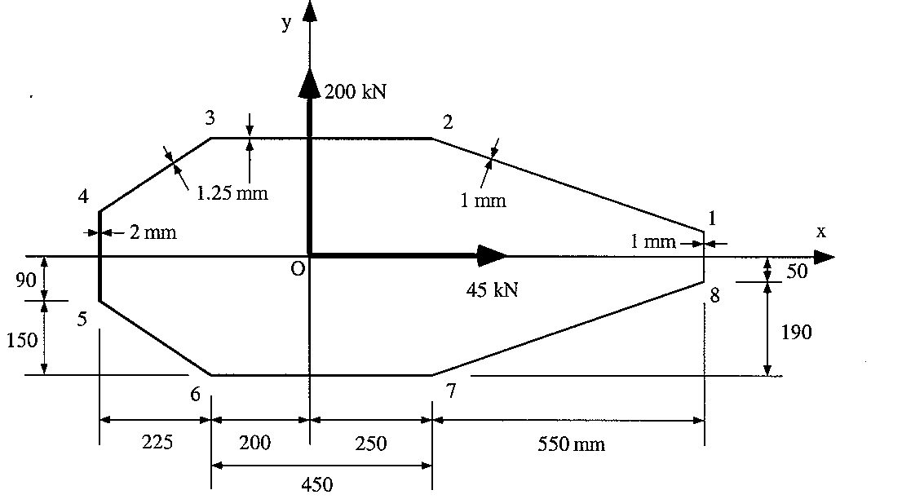 |
Figure 155: Single cell wing cross-section at built-in end |
1) Determine the integral terms, which are:
$$ \table ∮ptcos(ψ).ds, ∮tcos^2(ψ).ds, ∮tcos(ψ)sin(ψ).ds; ∮ptsin(ψ).ds, ∮tcos(ψ)sin(ψ).ds, ∮tsin^2(ψ).ds; ∮p^2.ds, ∮tpcos(ψ).ds, ∮tpsin(ψ).ds $$of which only 6 have to be determined as 3 are repeated.
The best way of determining these terms is by means of a table and by replacing the integral with a summation. The format of the table should be as follows:
| Segment | t(mm) | p(mm) | Δs(mm) | ψ^o | ptcos(ψ)Δs | tcos^2(ψ)Δs | tcos(ψ)sin(ψ)Δs | ptsin(ψ)Δs | tsin^2(ψ)Δs | p^2tΔs |
|---|---|---|---|---|---|---|---|---|---|---|
| 1-2 | 1 | 308.48 | 581.89 | 160.942 | -160662.7 | 519.8 | -179.6 | 58611.7 | 62.0 | 55372600 |
| 2-3 | 1.25 | 240 | 450 | 180 | -135000.0 | 562.5 | 0.0 | 0.0 | 0.0 | 32400000 |
| 3-4 | 1.25 | 310.63 | 270.42 | 213.69 | -87365.9 | 234.0 | 156.0 | -58243.8 | 104.0 | 32616369 |
| 4-5 | 2 | 425 | 180 | 270 | 0.0 | 0.0 | 0.0 | -153000.0 | 360.0 | 65025000 |
| 5-6 | 1.25 | 310.63 | 270.42 | 326.31 | 87365.9 | 234.0 | -156.0 | -58243.8 | 104.0 | 32616369 |
| 6-7 | 1.25 | 240 | 450 | 0 | 135000.0 | 562.5 | 0.0 | 0.0 | 0.0 | 32400000 |
| 7-8 | 1 | 308.48 | 581.89 | 19.058 | 169662.7 | 519.8 | 179.6 | 58611.7 | 62.0 | 55372600 |
| 8-1 | 1 | 800 | 100 | 90 | 0.0 | 0.0 | 0.0 | 80000.0 | 100.0 | 64000000 |
| Σ | 0.0 | 2632.7 | 0.0 | -72264.2 | 792.1 | 369802939 | ||||
Table 1: Calculation of integrals for matrix | ||||||||||
By then summing each of the calculated columns we can obtain the terms :
$$ [ \table 0, 2632.7, 0 ; -72264.2, 0, 792.1; 369802929, 0, 72264.2 ] ( \table θ' ; u' ; v' ) = 1/G ( \table 45×10^3 ; 200×10^3 ; 0 ) $$Solving this matrix gives:
Substituting these values into the shear flow equations we can determine the shear flows in each of the segments of the wing at the built-in end.
$$ q = Gt (pθ' + u' cos(ψ) + v' sin(ψ) ) $$
| Segment | t(mm) | p(mm) | Δs(mm) | ψ^o | q |
|---|---|---|---|---|---|
| 1-2 | 1 | 308.48 | 581.89 | 160.942 | 83.3 |
| 2-3 | 1.25 | 240 | 450 | 180 | -6.3 |
| 3-4 | 1.25 | 310.63 | 270.42 | 213.69 | -176.5 |
| 4-5 | 2 | 425 | 180 | 270 | -471.5 |
| 5-6 | 1.25 | 310.63 | 270.42 | 326.31 | -141.0 |
| 6-7 | 1.25 | 240 | 450 | 0 | 36.4 |
| 7-8 | 1 | 308.48 | 581.89 | 19.058 | 115.6 |
| 8-1 | 1 | 800 | 100 | 90 | 297.3 |
Table 2: Final tabulated shear flow values | |||||
Which gives the following shear flow distribution at the built-in wall:
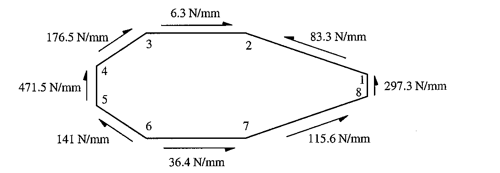 |
Figure 159: Final shear flow distribution |
And we can determine the centre of rotation or shear centre:
An analysis of this same section away from the influence of the built-in end gives the following shear flow distribution and location of shear centre:
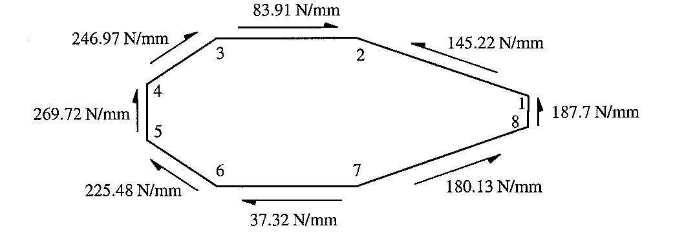 |
Figure 160: Shear flow distribution for wing section away from built- in effects |
The location of the shear centre is: xR =35.5mm, yR= 0 mm
EFFECT OF TORSION ON BUILT-IN RECTANGULAR BEAM
If a torque is applied to a rectangular beam, it was shown in section 5.1 that it will warp in the following manner:
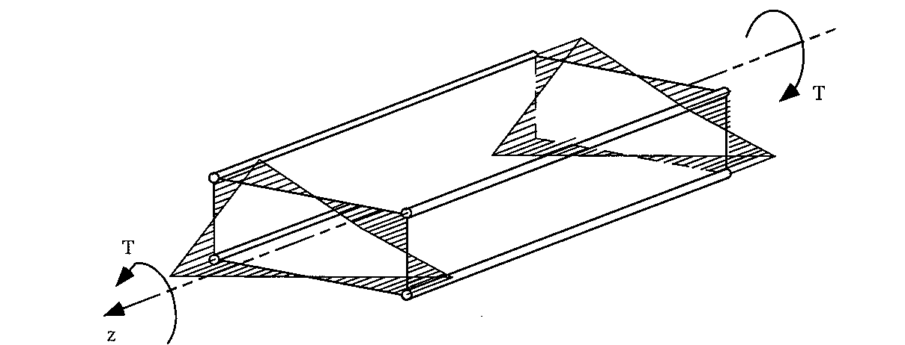 |
Figure 161: Unconstrained warping of rectangular beam with applied torque 'T' |
If one end of this beam was built-in, there would be no warping at this location. However because of the structure wants to warp, additional stresses would be generated in both the skin and the booms.
Lets now look at the same beam but built-in at one end, with all its dimensions.
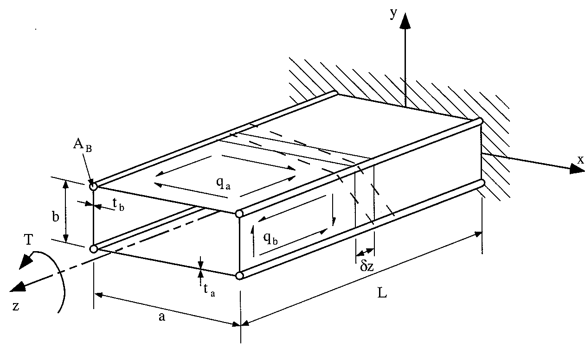 |
Figure 162: Rectangular beam built-in at one and with applied torque T at the other |
From equilibrium we have that:
$$ Σ M_z = T = ∮ qp.ds = 2 q_a a b/2 + 2 q_b b/2 $$giving that:
$$ T = ab(q_a + q_b) $$As stated previously, the equation for shear flow is given as :
$$ q = Gt ( {∂w}/{∂s} + {∂v_t}/{∂z} ) $$Because the cross-section of the beam is doubly symmetrical, the shear centre coincides with the centre of symmetry, so the equation reduces to:
$$ {∂v_t}/{∂z} = P_R {dθ}/{dz} $$where:
PR = Perpendicular distance about shear-centre
giving:
$$ q = Gt ( {∂w}/{∂s} + P_R {dθ}/{dz} ) $$In the beam we are analysing, for the top and bottom skins, the perpendicular distance is given by:
For the 2 webs the perpendicular distance is given by:
We now need to determine a term relating the rate of warping w.r.t. distance s. From previous section we know that at the planes of symmetry the warping is zero. So looking at a distorted element on the top skin from above we have:
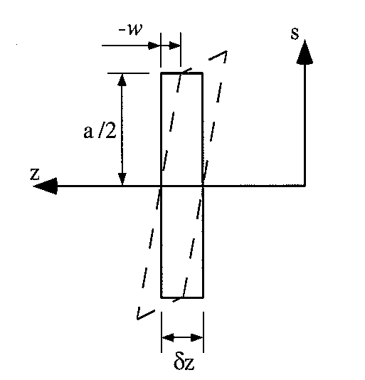 |
Figure 163: Distortion of top skin due to shear flow |
From this figure you can determine that the rate of warping is:
$$ {∂w}/{∂s_a} = - w/{a/2} = -{2w}/a $$And looking at a distorted element on the right web from the side we have:
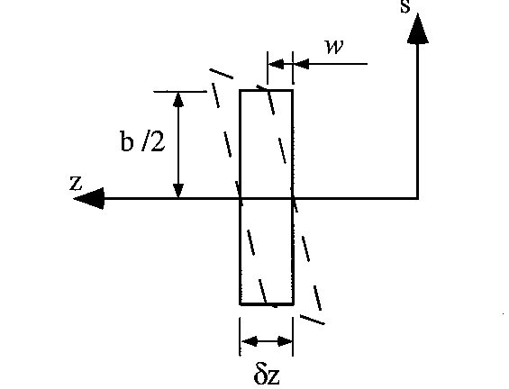 |
Figure 164: Distortion of right web due to shear flow |
From this figure you can determine that the rate of warping is:
$$ {∂w}/{∂s_b} = - w/{b/2} = -{2w}/b $$Substituting these expressions into the shear flow equations gives, for the top & bottom skins:
$$ q_a = Gt_a( -2w/a + b/2 {dθ}/{dz} ) $$and for the side webs:
$$ q_b = Gt_b( -2w/b + a/2 {dθ}/{dz} )$$And substituting these into first equation :
$$ T = abG ( t_a( -2w/a + b/2 {dθ}/{dz}) + t_b ( 2w/b + a/2 {dθ}/{dz}) ) $$On rearranging it gives:
$$ {dθ}/{dz} = {4w(bt_a - at_b)}/{ab(bt_a + at_b)} + {2T}/{abG(bt_a + at_b)} $$Which when substituting into shear flow equations gives:
$$ q_a = - {4wGt_at_b}/{(bt_a + at_b)} + {Tt_a}/{a(bt_a + at_b)} $$$$ q_b = - {4wGt_at_b}/{(bt_a + at_b)} + {Tt_b}/{b(bt_a + at_b)} $$
These last three equations will give us the rate of twist of the section and the shear flows, except that they are a function of w. To eliminate this from these equations we need to consider boom equilibrium.
However because of the built-in constraint, the booms carry a direct stress σz, but we don't know what it is yet.
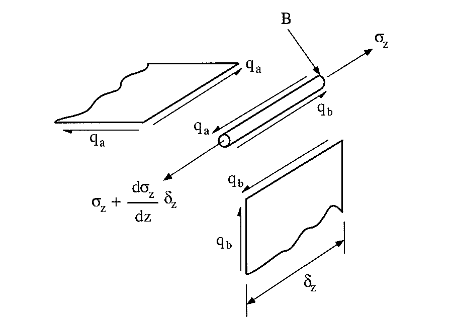 |
Figure 165: Equilibrium of top right hand boom |
Summing the forces about the z-axis gives:
$$ Σ F_z = 0 = ( σ_z + {∂σ_z}/{∂z} δ z ) B - σ_z B + q_a δz - q_b δ z $$which simplifies to:
$$ B {∂σ_z}/{∂z} + q_a - q_b = 0$$From Elasticity we have that:
$$ σ_z = E ε_z = E {∂ w}/{∂z} $$which then substitutes to give :
$$ BE {∂^2 w}/{∂ z^2} + q_a - q_b = 0 $$Substituting for qa, and qb, into this equation gives:
$$ {∂^2 w}/{∂z^2} - {8Gt_a t_b}/{BE(bt_a + a t_b)} w = - {T(bt_a - at_b) }/{ abBE(bt_a + at_b)} $$This equation is in the form of a second order differential equation of the form:
$$ {∂^2 w}/{∂z^2} - λ^2 w = - β $$where:
$$ λ^2 = {8Gt_a t_b}/{BE(bt_a + a t_b)} \text" , " β = {T(bt_a - at_b) }/{ abBE(bt_a + at_b)} $$This differential equation is of standard form and its solution is:
$$ w= C cosh(λz) + D sinh(λz) + β/λ^2 $$Which when substituting for the constant term on the right hand side of the equation , gives:
$$ w = C cosh (λz) + D sinh(λz) + T/{8abG} ( b/t_b - a/t_a ) $$We now need to solve for the two unknown constants, however we have two boundary conditions that we can use to resolve these.
1) At z=0, the warping is zero, w = 0, giving that:
$$ C = - T/{8abG}( b/t_b - a/t_a ) $$2) At z = L, because there is no applied direct load, $ε_z = {dw}/{dz} =0 $, giving that:
$$ D = T/{8abG}( b/t_b - a/t_a ) tanh(λL) $$In a previous Example we had determined the warping at the corners of arectangular box beam. That term was found to be:
$$ w_0 = T/{8abG} ( b/t_b - a/t_a ) $$So Substituting these constants and w0 gives the warping of the box beam over its entire length:
$$ w= w_0(1 - cosh(λz) + tanh(λL)sinh(λz) ) $$which simplifies to :
$$ w = w_0 ( 1 - {cosh(λ(L - z))}/{cosh(λL)} ) $$Substituting this gives us the direct stresses in the booms:
$$ σ_z = λ Ew_0 {sinh(λ(L-z))}/{cosh(λL)} $$The direct load carried by the booms is then:
$$ P_z = σ_z B = B λ Ew_0 {sinh(λ(L-z))}/{cosh(λL)} $$and substituting back into equations for shear flow we obtain:
$$ q_a = T/{2ab}( 1 + {(bt_a - at_b)}/{(bt_a + at_b} {cosh(λ(L-z))}/{cosh(λL)} ) $$$$ q_b = T/{2ab}( 1 - {(bt_a - at_b)}/{(bt_a + at_b} {cosh(λ(L-z))}/{cosh(λL)} ) $$
The thing to note here is that as z —> L and L — Large, the RHS term in the brackets of these equation goes to zero, and these equations become:
$$ q_a = q_b = T/{2ab} $$which is the shear flow for a closed beam under an applied torque.
Plotting these results, it can be seen that the shear flows decays or grows; depending on the shear flow; exponentially and converges to the free beam shear flow solution.
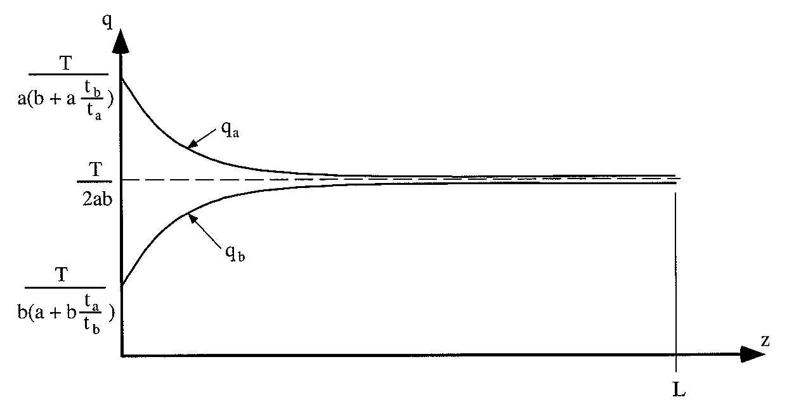 |
Figure 166: Shear flow distribution in webs and skins along beams length |
SHEAR LAG
Aircraft structures consist of boom/skin/stringer combinations with booms and stringers carrying direct loads and the skin the shear loads.
These direct loads are transmitted between the booms and stringers by shear flows/stresses in the skin. However as the skins are very thin, their deformation is very large and can only transmit a fraction of the applied load to the other booms/stringers. This phenomenon is called 'shear lag or diffusion.’
Exact solutions of shear lag problems are very complex, however some simple problems can be done which will show this phenomenon.
EXAMPLE :
The singly symmetrical flat panel of constant 't' is reinforced by two edge booms, constant area 'B', and a central stringer of constant area 'A’, loaded as shown. Determine the load & stress distribution in the booms and shear flow distribution in the webs.
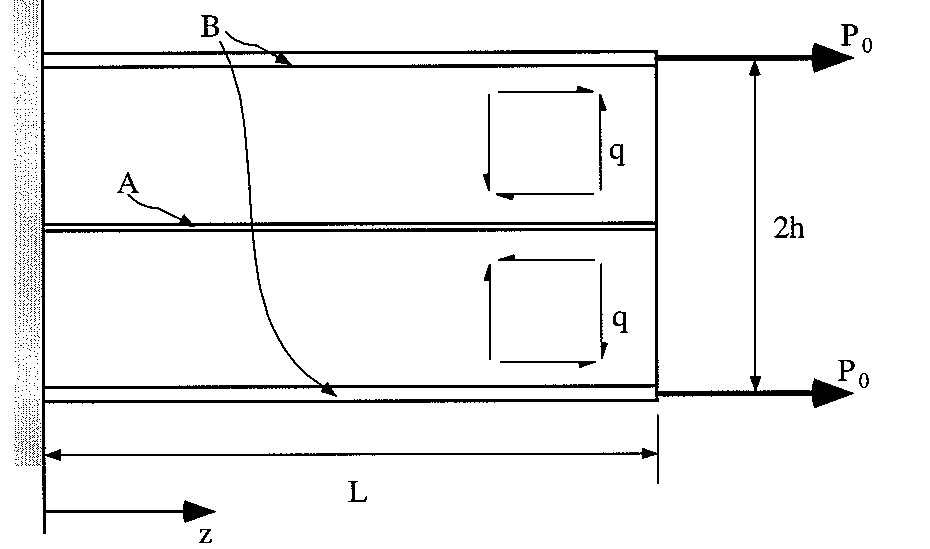 |
Figure 167: Symmetrical 3-boom flat pane! with assumed shear flows |
1)Sketch on each skin/web an assumed direction for the shear flow
2)Consider equilibrium of an element of length 5z of the top boom
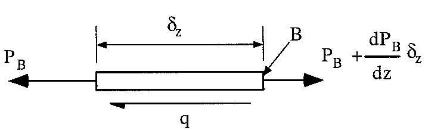 |
Figure 168: Equilibrium of top boom |
Summing forces in about the z-axis:
$$ Σ F_z = 0 = -P_B + P_B + {∂P_B}/{∂z} δz - q δz $$which when simplified gives:
$$ {∂P_B}/{∂z} = q $$3) Consider equilibrium of central stringer
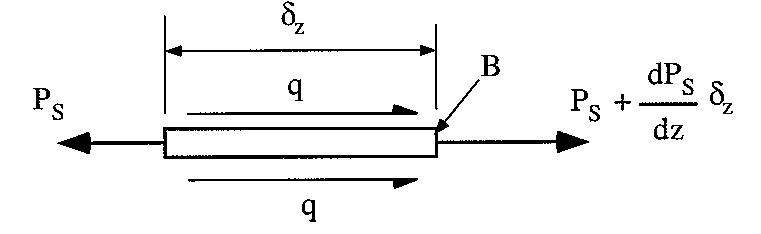 |
Figure 169: Equilibrium of central stringer |
Which gives:
$$ {∂P_S}/{∂z} = - 2q $$4) Consider equilibrium of entire flat panel at any z location
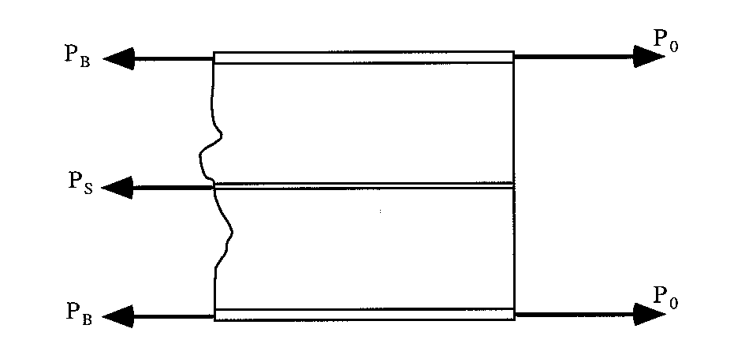 |
Figure 170: Equilibrium of flat panel at any z location |
Giving:
$$ 2P_B + P_S = 2 P_0 $$5) We now need to consider how the boom and stringer and skin between them deform. Remember that the skin is only affected by shear, and that the axial loads are taken by the boom and stringer.
An element of length δz between the stringer and boom will deflect something like this:
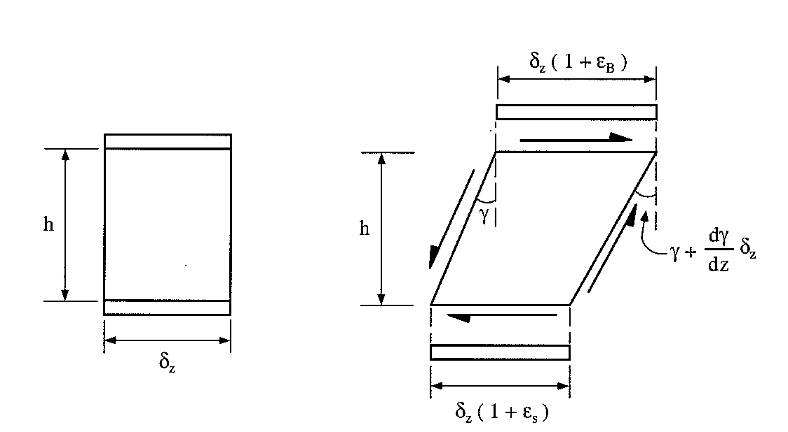 |
Figure 171: Undistorted and distorted element of beam δz between top boom and middle stringer |
NOTE : The boom and stringer must deflect by the same amount as the skin that is in attached to them, this is the principle of compatibility.
From this diagram we can say that the displacement of the boom is equal to the displacement of the stringer plus the shear deformation of the skin. Using trigonometry, this gives:
$$ δz ( 1 + ε_B ) = δz ( 1 + ε_S ) + {∂γ}/{∂z} δz h $$which simplifies to give: $$ {∂γ}/{∂z} = 1/h ( ε_B - ε_S ) $$
From Elasticity we have that:
$$ ε_S = P_s/{EA} \text" , " ε_B = P_B/{EA} \text" , " γ = q/{Gt} $$Substituting these gives:
$$ {∂q}/{∂z} = {Gt}/{Eh} ( P_B/B - P_S/A ) $$ We can now use these equations to substitute for either PB or Ps. It really makes no difference which of the two forces is eliminated. For this example and I decided to eliminate Ps.By doing this the equation becomes:
$$ {∂^2P_B}/{∂z^2} - {2Gt}/{Eh} ( 1/A + 1/{2B} )P_B = - {2P_0Gt}/{EAh} $$which is in the same form as differential equation used previously which is:
$$ {∂^2 P_B}/{∂ z} - λ^2 P_B = - β $$where:
$$ λ^2 = {2Gt}/{Eh} ( 1/A + 1/{2B} ) \text" , " β = {2GtP_0}/{Eh} $$As before, the solution for this type of equation is:
$$P_B = C cosh(λz) + D sinh(λz) + β/{λ^2} $$We now need to determine the constraints of integration. To do this we need to look at the boundary conditions.
a) At z=L, PB = P0, Substituting these values into the above equation and solving for C, gives:
$$ C = {P_0 - β/λ^2}/{cosh(λL)} - D tanh(λL) $$b) At z= 0, the warpage w = 0, so the shear strain γ = 0, which meaning that the shear flow q = 0, substituting this gives:
$$ {∂P_B}/{∂z} = 0 = Cλsinh(0) + Dλ cosh(0) \text" --> " D = 0 $$which means that
$$ C = {P_0 - β/λ^2}/{cosh(λL)} = {P_0A}/{(A+2B)} 1/{cosh(λL)} $$and when we substitute into the equation for P, it gives:
$$ P_B = {2B}/{A+2B} P_0 ( 1 + A/{2B} {cosh(λz)}/{cosh(λL)} ) $$which can then be substituted to determine the shear flow distribution and the load carried by the stringer, giving that:
$$ P_S = {2A}/{A+2B} P_0 ( 1 - {cosh(λz)}/{cosh(λL)} ) $$and
$$ q = {λP_0 A}/{(A + 2B)} {sinh(λz)}/{cosh(λL) } $$